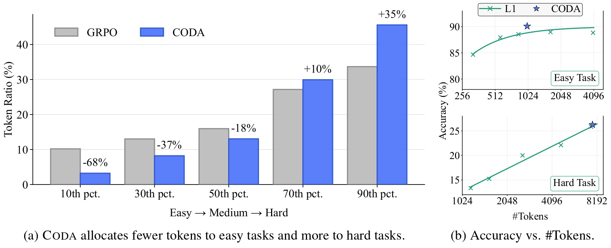
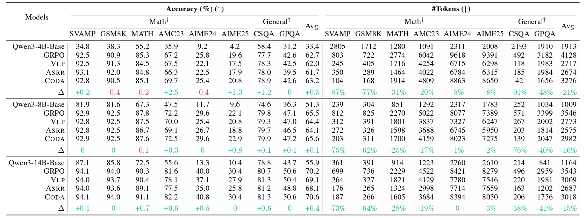

CODA (Compute Allocation by Difficulty Awareness) dynamically scales reasoning depth by instance difficulty to eliminate overthinking on easy tasks while incentivizing deep deliberation for complex ones.
CODA
Difficulty-Aware Compute Allocation for Adaptive Reasoning
60%+
Token cost reduction on easy tasks, while keeping accuracy strong.
Adaptive
Compute is allocated per instance difficulty rather than by a fixed budget.
No hints
CODA works without external labels or user-provided annotations.
Adaptive compute
length vs. difficulty
Easy
Medium
Hard
Easy tasks
fewer tokens
Hard tasks
deeper search
CODA estimates difficulty from rollouts, then converts that signal into easy-side
penalties and hard-side bonuses that shape reasoning length.
Overview
Adaptive reasoning aligns compute with difficulty
Large reasoning models benefit from more inference-time compute on hard tasks, but they can overthink simple problems and pay a disproportionately high cost for little gain. CODA treats this as a utility maximization problem, allocating tokens until the marginal accuracy gain falls below the incremental cost, which yields shorter traces on easy tasks and deeper deliberation on hard ones without external annotations or user-provided budgets.

Method
A lightweight difficulty signal drives the allocation
CODA sits on top of group-based reinforcement learning. It estimates instance difficulty from rollout success rates, then uses that signal to modulate a length-dependent shaping term through two non-negative gates.
1
Estimate difficulty
Rollouts produce an internal signal that approximates how hard an instance is for the current policy.
2
Map difficulty to gates
The signal is mapped to non-negative easy- and hard-side weights that shape token usage in different directions.
3
Modulate reasoning depth
Easy questions are penalized for verbosity, while hard questions are encouraged to use deliberative reasoning.
4
Adapt online
The resulting policy allocates compute dynamically, without a separate difficulty classifier or manually curated token budget.
Results
Adaptive behavior across models, benchmarks, and difficulty shifts
The paper reports experiments on Qwen3-4B/8B/14B-Base backbones and evaluates across math and general benchmarks. The headline result is not just higher accuracy, but a more sensible use of reasoning length.

Efficiency on easy tasks
CODA reduces token usage aggressively on easy problems, with the abstract reporting more than 60% lower cost in the easy regime while preserving strong accuracy.
More effort on hard tasks
Harder questions receive more compute, which helps the model better preserve performance where longer, more deliberate reasoning is actually useful.
Robustness under shift
Training analysis shows CODA remains effective under difficulty shifts, indicating the allocation rule learns task structure rather than memorizing a single budget.
BibTeX
Citation
@article{wu2026coda,
title = {CODA: Difficulty-Aware Compute Allocation for Adaptive Reasoning},
author = {Wu, Siye and Xie, Jian and Zhang, Yikai and Xiao, Yanghua},
journal = {arXiv preprint arXiv:2603.08659},
year = {2026}
}